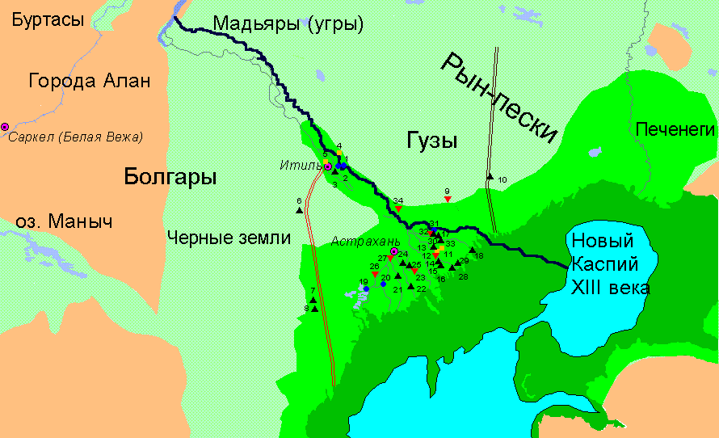
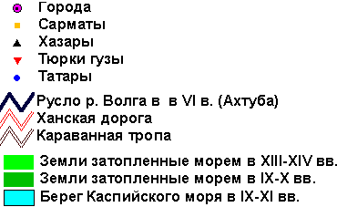

Л.Н. Гумилев. Открытие Хазарии. Древняя Русь и Великая Степь
Карта 1. Волжская Хазария в VI≈XIII вв.
|  |
| Условные обозначения  |
Легенда к карте Волжской Хазарии
1. Развалины Сарая Бату-хана.
2. В пойме Волги - Ахгубы, на правом берегу Астубы в урочище Центральная и около птицефермы (против села Селитряного) на вспаханном поле обнаружены фрагменты красной, хорошо прожженной керамики, сделанной на гончарном круге. Керамика аналогична находкам в Сарае и ее принадлежность татарам XIII-XVI вв. не вызывает сомнения.
3. На обсохшем берегу Ахтубы ниже устья протока Мангут найдены фрагменты керамики лепной, плохо прожженной, с бурыми поверхностями и черной глиной посередине. Керамика этого типа известна от Дона до Байкала и датируется VII-XI вв.; в данном случае ее можно с наибольшей долей уверенности приписать гузам. Один черепок обнаружен in situ в слое под аллювиальными отложениями мощностью 1,4 м.
4. На бугре около южной окраины деревни Баста обнаружены сарматские погребения, раздутые ветром.
5. Около южной окраины Енотаевска, в оползне прибрежного холма над Волгой, были замечены выступавшие из земли кости человека. Мужчина лежал на спине головой на восток, по правую сторону был плохо сохранившийся железный меч. В головах - глиняный горшок, у правого локтя - глиняная чашечка (сармат).
6. У обочины автомобильной дороги, пролегающей, как можно думать, по старому караванному пути восточнее Сарпинских озер, найдено несколько фрагментов керамики: сероглинной, хорошо прожженной, неорнаментированной. Несмотря на малую выразительность, они напоминают сероглинную керамику хазарских погребений на бугре Степана Разина.
7. У обочины дороги найдено несколько фрагментов керамики, аналогичной хазарским сероглинным сосудам бугра Степана Разина. Находки обнаружены при рекогносцировке 1960 г.
8. На склоне холма, недалеко от небольшого озера, найдено несколько фрагментов керамики, аналогичной хазарской.
9. Урочище Азау - песчаная степь, поросшая редкими кустиками и купами тамариска. Почти в каждой котловине выдувания на материковом суглинке можно было найти фрагменты керамики типа, отнесенного нами к гузам.
10. Караванная тропа через Рын-пески идет прямо на север. Ныне рядом с нею пролегает автомобильная дорога. Находки были сделаны в котловине выдувания около заброшенного колодца. Очень много керамики татарской и гузской, а также встречались фрагменты, отнесенные М.И.Артамоновым к бронзовому веку. Но последние не представля ли для нашей темы интереса, и описание их опущено.
11. Могильник на бугре Степана Разина.
12. Система бугров между протоками Тас и Кабчик (Тарновая). На бугре Билинга (абс. отм. вершины минус 14,4 м) обнаружено погребения (абс. отм. - минус 16,1 м). Скелет ориентирован на северо-запад, лежит на спине, руки вытянуты, голова наклонена направо. Череп раздавлен, кости очень плохой сохранности. Вокруг скелета два скопления фрагментов керамики: у правого колена - остатки сосуда сероглинного, лепного, с прочерченным решеткой рифлением, венчик с валиком на внутренней стороне; у головы - светло-бурого с заглаженной поверхностью черноглинного, лепного, напоминающего гузскую. Около черепа - фрагмент железного ножа. На метр правее правого колена - погребальный горшочек, лепной красновато-бурый, венчик без валика. Размеры; высота - 4,5 см, ширина горлышка - 3,0 см, ширина середины 5,0 см. У правого локтя глиняное пряслице, а у правого бока - железное шило. На груди - бронзовое круглое зеркало с ручкой и пуговкой в центре; диаметр зеркала - 5 см; длина ручки - 1,2 см; в ручке круглая дырочка. У левого плеча, правого локтя и на груди бронзовые фибулы. Нижняя часть, где закреплена спица, обмотана проволокой, средняя часть лирообразная с утолщениями и пуговкой на конце. Подол халата или платья (фрагменты ткани налипли на землю) обозначен бусами - 13 целых и 9 обломков. Бусы стеклянные, круглые, из отрезков трубочек, покрыты слоем иризации, скрывающей цвет. Одна - бусина сердоликовая. Дата бус (по определению З.А.Львовой) - I-II вв. н.э.
Подъемный материал на бугре Билинга разнообразен: около мусульманского кладбища - татарская керамика XV-XVI вв.; западнее погребения много фрагментов лепной керамики, аналогичной описанной при скелете. Много фрагментов железных изделий: ножей, удил, фрагмент меча. Наибольшее количество находок связано с пятнами убитой земли (полами жилищ).
Восточнее вышеописанного погребения обнаружено еще одно, головой на север, очень плохой сохранности, в твердом слое сцементированной супеси, прикрывающей местами кости на 5 см. Сопровождается фрагментами сероглинной лепной керамики, мелкими и невыразительными. Вещей при скелете не обнаружено. Подъемный материал - обломки (до 2 см) железных орудий, беспорядочно рассыпанных по поверхности бугра.
13. Бугор Казенный. Обнаружен на гребне центральной части бугра скелет очень плохой сохранности. Череп был разбит и остатки его валялись вокруг скелета. Сохранившиеся ребра и коленные чашечки позволили установить, что скелет лежал на спине и был ориентирован на запад. Рядом со скелетом елевой стороны была бровка насыпной земли на 0,2м выше скелета. Под нею лежала нижняя челюсть лошади на слое обугленной почвы. 1,5 м юго-западнее лежали фрагменты разбитого лепного, черноглинного, обожженного сосуда и лошадиные зубы. Сопровождающие вещи: фрагмент железного ножа под шеей скелета, кусочки железного шлака и медных пластинок длиной до 1 мм и пепел, перемешанный с песком.
Здесь и всюду дальше погребения наземные, иногда присыпанные эоловым песком и пылью.
Подъемный материал - фрагменты керамики: 1) керамика черног-линная, лепная с прочерченными бороздками; 2) керамика лепная, черноглинная с обожженными до красно-бурого цвета поверхностями; 3) керамика гончарная, из хорошо отмученной глины с лощением; 4) то же без лощения, венчик с валиком; 5) то же с красноватой внутренней поверхностью; 6) горлышко лепной амфоры лощеное; 7) керамика красноглиняная, гончарная, черепок звонкий; 8) фрагмент железной пластинки.
Погребения: над обрывом северного края бугра в центральной его части (посередине) обнаружено погребение, ориентированное на запад, хорошо сохранившееся благодаря тому, что слой сцементированной супеси над черепом достигал 7-10 см. Наружу выступали только венчики двух сосудов. Скелет лежал на спине со скрещенными на животе руками и ногами, слегка согнутыми в коленях. Ступни ног и кисти рук отсутствуют. В изголовье находились кости и череп барана, а немного выше - фрагменты тонкой медной пластинки с дырочками и заклепкой, вокруг которой сохранились остатки ремешка. На месте кисти левой руки - частично сохранившееся бронзовое зеркальце 2R = 6,8 см, толщиной 0,2 см; ниже таза - обломок железного ножа; другой, больший - у левого плеча. Это обломки одного ножа длиною 12,7 см, шириною 0,7 см, однолезвийного. Очевидно, нож был сломан при погребении и обломки оказались в разных местах.
У изголовья - два сероглинных сосуда, лепных, плоскодонных, высотой 14,5 см, диаметрами 11 и 11,5 см. Венчики отогнуты наружу, на одном - ямочный орнамент. Ноги скелета были засыпаны больше, чем голова, h засыпки -25 см, и на ней на 40 см северней голеней скелета найден раздавленный плоскодонный лепной горшок, подобный вышеописанным, и несколько аморфных косточек. Отношение этого. третьего горшка к погребению неясно.
Второе погребение на этом же бугре, но ниже предыдущего; ориентировано также на запад. Скелет положен на спину, руки и ноги вытянуты, ступни ног отсутствуют, кости кистей рук перепутаны вследствие небольшого оползня, завалившего тело и тем спасшего его от разрушения. Междудлинными костями наблюдалисьбольшие разрывы. Не задетый оползнем череп остался на поверхности и был раздавлен. С правой стороны черепа стоял черноглинный лепной горшок с венчиком, отогнутым наружу и украшенным ямочным орнаментом. Рядом с ним находились фрагменты раздавленного красного гончарного, хорошо прожженного сосуда, а над головой - фрагмент однолезвийного ножа.
14. Бугор Корень. Обнаружено в центре бугра погребение очень плохой сохранности, ориентированное на северо-запад. Сопровождается фрагментом железного ножа и фрагментами коричнево-серой, лепной керамики с ямочным и бороздчатым орнаментом. Подъемный материал: 1) керамика черноглинная, хорошо прожженная, гончарная слощением; 2) керамика лепная, грубая, черноглинная с обожженными боками - гузская; 3) керамика черноглинная, лепная, плохо прожженная с плоским венчиком; 4) керамика красноглинная, гончарная с плоским венчиком, с бороздчатым орнаментом.
Восточнее бугра Корень - невысокий Бай-бугор, буквально засеянный находками вплотьдо осколков водочных штофов XVIII в. Собран подъемный материал: фрагменты керамики из хорошо отмученного серого теста, черепок звонкий, гончарный, стенки почти плоские, по-видимому, от больших сосудов с прочерченной лощеным орнаментом решеткой или параллельными полосками. Венчики с валиками отогнуты наружу; дно плоское, иногда с выступом наружу, со следами от доски. Ручки лепные, овальные.
15. Бугор Кунгур. Подъемный материал - фрагменты сероглинной керамики и железных орудий.
16. Бугор Бешлык - немного фрагментов керамики и железа, встречаются кости людей.
Подъемный материал: 1) фрагменты красноглинной керамики с бороздками; 2) фрагменты гузской керамики с венчиком, срезанным косо; 3) керамика черная, плохо прожженная с ямочками и бороздчатым орнаментом; 4) керамика коричнево-серая (см. Корень); 5) керамика с прочерченным лощением (см. Бай-бугор).
17. Бугор Шикэ.
На восточной стороне бугра, над склоном ряд землянок с выходом на восток, с расплывшимися стенами. Это относительно поздние сооружения. На вершине бугра остатки погребения - ребра и след головки берцовой кости, позволяющие определить, что скелет был ориентирован на север. Сопровождается фрагментами серой гончарной керамики с бурыми поверхностями и обломками железных орудий. На гребне бугра квадраты утрамбованной земли, без растительности. По-видимому, полы древних землянок.
18. В море, по Иголкинскому банку, землечерпалка прорыла канал для углубления фарватера. Вдоль канала бугорки-выкиды, ибо море здесь глубиной 0,5-0,8 м. На одном из выкидов против острова Дальнего обнаружены кости животных и фрагменты керамики, скатанные водой. Большие сосуды черноглинные, с красной поверхностью от обжига, тесто слабое, плохо отмученное, вмятины от пальцев. Небольшие сосуды черноглинные, с красной поверхностью от обжига, тесто слабое, плохо отмученное, вмятины от пальцев. Небольшие сосуды сероглинные, тонкостенные. Те и другие аналогичны ранее находимым хазарским. Абсолютная отметка находки - минус 29,6 м, с учетом уровня моря в банке и глубины канала.
19. "Чертово городище", или "Городище Книги Большому Чертежу".
20. Обследование берегов Бахтемира и Старой Волги не дало находок. Приречные бэровские бугры застроены, а дальние содержат немногочисленные фрагменты татарской керамики. Низовья - аллювиальная равнина, с купами ив и зарослями камыша. Выше, на широте "Чертова городища", бугор Каракол (7 км на юго-восток от дер. Самосделки) - неукрепленное татарское поселение. Следы полой, фрагменты больших красноглинных сосудов с бороздчатым орнаментом: остатки печи из кирпичей; между кирпичами кости быка и красной рыбы.
21. Около села Увары группа бугров, где, по опросным сведениям, встречаются "черепа и черепки". Осмотрен бугор Тутинский, где удалось зачистить остатки трех хазарских (т.е. аналогичных находкам на бугре Степана Разина) погребений. Все они наземные, в очень твердой сцементированной супеси, плохой сохранности, так как размыты.
а) Погребение: остатки скелета - позвоночник ориентированный на СВС (3450); два горшка (фрагменты): 1) горшок красноглинный, хорошо прожженный плоскодонный, лепной, диаметр дна 9,0 см и 2) обломки лепного, черноглинного, с красными от обжига стенками, дна нет, диаметр 20 см; внутри "ободка" баранья лопатка, аморфные кости, обломок железа и зола.
б) Погребение: скелет без головы, без левой руки и левой ноги; ориентирован на северо-запад.
в) Сосуд раздавленный, так что глина расслоилась. Черноглинный лепной горшок с лощеной поверхностью, венчик отогнут наружу, дно плоское.
22. На Таболе, у Чапаевского рыбзавода, обследовано два бугра.Уподно-жия первого от реки найден фрагмент сосуда из склеенных лент глины (гофрированный), подобный дагестанским сосудам из-под Дербентской стены VI в. На вершине бугра собран подъемный материал: 10 фрагментов сероглинной керамики хазарского времени, 5 фрагментов гузской керамики и основная масса - сероглинная керамика гончарная, звонкая; орнаментирована бороздками и ямками, вдавленными овальным концом палочки.
На бугре, удаленном от реки на 1,5 км, сероглинная гончарная, крепкая керамика с круглым валиком на венчике. Украшена рядом четырехугольных углублений, сделанных палочкой вдоль венчика. Она близка к хазарской, но полностью не идентична, может быть, потому, что мы встречаем здесь осколки больших сосудов. На обследованных буграх обнаружены пятна полов круглых и овальных жилищ.
23. На Таболе, у села Семибугры (их действительно семь), осмотрен бугор - Сарай-тюбе. Обнаружена разнообразная керамика: серая лощеная; черная с лощением, прочерченным решеткой; красная с бороздчатым орнаментом и лепная, черная в изломе с красным обжигом (гузская). Количество находок (45 фрагментов) превышает все ранее обследованные места.
24. На протоке Табол, около села Раздор, цепь бэровских бугров. Керамика на всех одинаковая - трех типов: а) красная, гончарная, хорошо прожженная; 2) толстостенная, лепная, с красным обжигом, черным тестом в изломе (гузская); черная, лощенная, хорошо отмученное тесто, звонкий черепок.
25. Бараний бугор одиноко высится выше Тузуклея среди дельтовой равнины в 1 км от реки. Абс. отм. - минус 14,4 м. Поражает обилие подъемного материала и захоронений.
Находки: горшочек с крышкой собран из черепков. Высота 10 см, диаметр по венчику - 8,5 см, длина - 7,0 см, а средней части - 12,6 см. Лепной, черноглинный, венчик отогнут наружу.
Скелет ребенка, лежит головой на восток. (Это - единственный случай восточной ориентировки.) Лежит на спине, череп раздавлен, руки и ноги вытянуты. В изголовье, на месте, где обычно находятся кости жертвенного барана, лежит скелет грудного младенца. Развалившийся по швам череп младенца находится у правого плеча скелета. Рядом около головы скелета - два горшка. Один черноглинный, лепной, с серой поверхностью и венчиком, отогнутым наружу; внешняя сторона его покрыта горизонтальными бороздками, высота - 1,5 см, диаметр - 12,5 см, толщина стенки - 0,6 см; второй - плоскодонный, красный, гончарный, грушевидной формы с плоской ручкой, тесто хорошо прожженное; высота - 12,6 см, диаметр - 10 см; толщина стенок - 0,5 см; на широкой части - два пальца полосок, в основании шейки - одно, а над ним прочерчен узор в виде фестонов. Под черепом найдены серьги-колечки диаметром 1,3 см.
Скелет ребенка на северо-западном конце бугра лежит на спине, головой на запад. У правого виска фрагмент бронзовой серьги-колечка. Нарушена левая часть ребер и ключица: они лежат на черепе и вокруг него. Сосуд, собранный из черепков, лепной, рифленый. Частично реставрирован. Высота - 12 см; диаметр - около 14 см.
Скелет ребенка без горшков, бежит на правом боку, ориентирован на запад. Череп разбит в недавнее время; под черепом железная игла, под тазовыми костями и поясницей следы дерева, вроде прокладки. Длина скелета - 0,60 м.
Подъемный материал на Бараньем бугре: а) керамика гузская - 13 фрагментов от стенок сосудов, невыразительных, с прочерченными ногтем горизонтальными бороздками; 6) керамика татарская - 2 фрагмента; в) керамика хазарская, сделанная на круге, сероглинная, звонкая - 4 фрагмента.
Орнамент: 1) волна (синусоида) из семи параллельных борозд; ширина штриха - 2 мм; 2) то же, более грубая, ширина штриха - 4 мм; 3) бороздки прямые, четыре посередине бока сосуда; ширина штриха - 4 мм; 4) то же, более глубокие, покрывающие весь фрагмент сосуда; ширина штриха - 2 мм; г) керамика хазарская, лепная, черноглинная, слабо прожженная; д) два фрагмента железного ножа; е) фрагмент керамической плитки - черепицы, слегка изогнутой; размеры - 13х7х3 см. На северной и восточной стороне обнаружены четырехугольные пятна убитой земли, которые, по-видимому, являются полами жилищ. Погребения группируются на южной части бугра, между гребнем и ск.юном и на западном конце бугра.
26. На бэровском бугре на берегу Хурдуна найдено два маловыразительных фрагмента гузской керамики.
27. Подъемный материал - гузская керамика - на бугре Муллин.
28. Подъемный материал - керамика - на бугре Тишковском (Тишково в низовьях Буянского протока, близко от моря): а) фрагменты керамики сероглинной, с черными поверхностями, сделанной на гончарном круге, с прочерченным лощением - 3 фрагмента (хазары); б) гузская - 3 фрагмента; в) сероглинная, лепная с внутренней красной поверхностью.
29. На левом берегу Буянского протока, на одиночном бугре в дельтовой аллювиальной равнине - два невыразительных фрагмента хазарской керамики, свидетельствующие о заселенности южной дельты в первом тысячелетии н.э.
30. Подъемный материал - керамика - на Федориткином бугре около села Мултаново. Сероглинные сосуды из отмученного теста, наружная поверхность с прочерченным лощением, стенки плоские, венчик с валиком, орнамент бороздчатый. Много обломков железных орудий.
31. Подъемный материал - татарская керамика - на бугре против села Котяевки, на правом берегу Кигача.
32. Подъемный материал - керамика - Безымянный бугор, около Тумгановки: а) керамика сероглинная, гончарная, хорошо прожженная, венчик круглый, отогнут внутрь. Аналогов в наших находках не встречается.
Бугры Нарын-гора по речке Макарке: фрагменты хазарской красной керамики и фрагмент - серой.
33. Вор-бугор, около Красного яра: а) керамика сероглинная, гончарная, с черной поверхностью, венчик валиком отогнут наружу, обжиг хороший, прочерченное лощение - II фрагментов (аналогия - Салтово, хазары); 6) керамика сероглинная, лепная, хорошо прожженная; 4 фрагмента (хазары); в) керамика красноглинная, гончарная, хорошо прожженная - 9 фрагментов (татары); г) фрагменты железных орудий - 8 фрагментов.
Караульный бугор около Красного Яра: а) керамикалепная, серая, хорошо прожженная, пористая с бугорчатой поверхностью - 2 фрагмента; б) ручка от кувшина, лепная, светлокрасная, хорошо прожженная. Зурманский бугор около Красного Яра: а) один фрагмент керамики сероглинной лепной (хазарской); б) два фрагмента татарской керамики.
Бугры от Красного Яра до Марфина - без находок.
34. Малый Арал - бугры восточнее села. Подъемный материал: керамика красная и серая, хорошо прожженная (2 фрагмента) и гузская, аморфная (2 фрагмента).
Ссылки
Следующие страницы ссылаются на данную карту:
- Гумилёв Л. Н. Древняя Русь и Великая степь. Часть первая. География этносферы первого тысячелетия н. э. Кто есть кто.
- Гумилёв Л. Н. Соседи хазар.
- Гумилёв Л. Н. Хазария и Каспий.
- Гумилёв Л. Н. Зигзаг истории.
- Гумилёв Л. Н. Открытие Хазарии. Гл IX. Дон.
- Лавров С. Б. Лев Гумилев. Судьба и идеи. 9. Гумилевское открытие Хазарии.
- Родионов А. Ю. Методические указания по построению карт по истории при помощи ArcView.
Карта выполнена А. Родионовым в 1999 г.
Эта страница была последний раз обновлена 08/26/08.
|
|
06/10/20 - 03:44 |